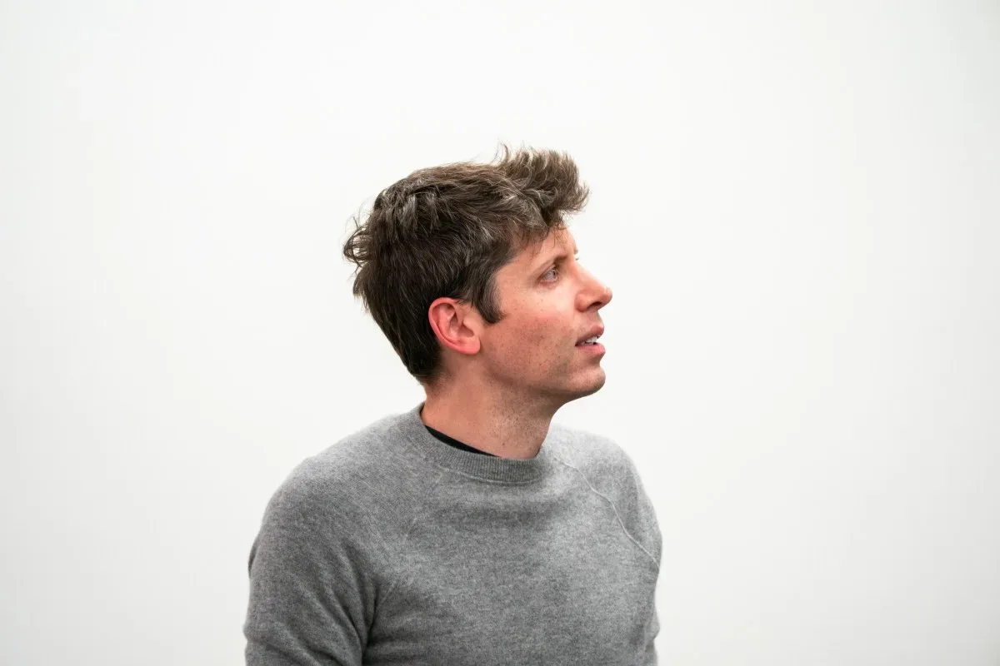
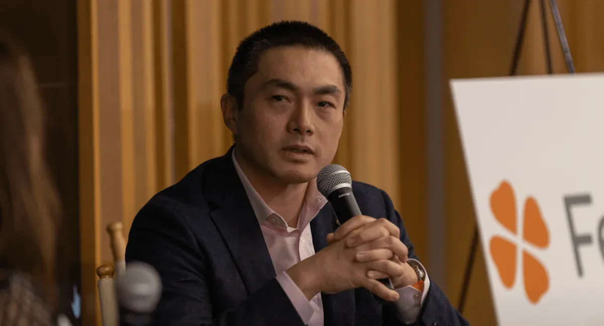
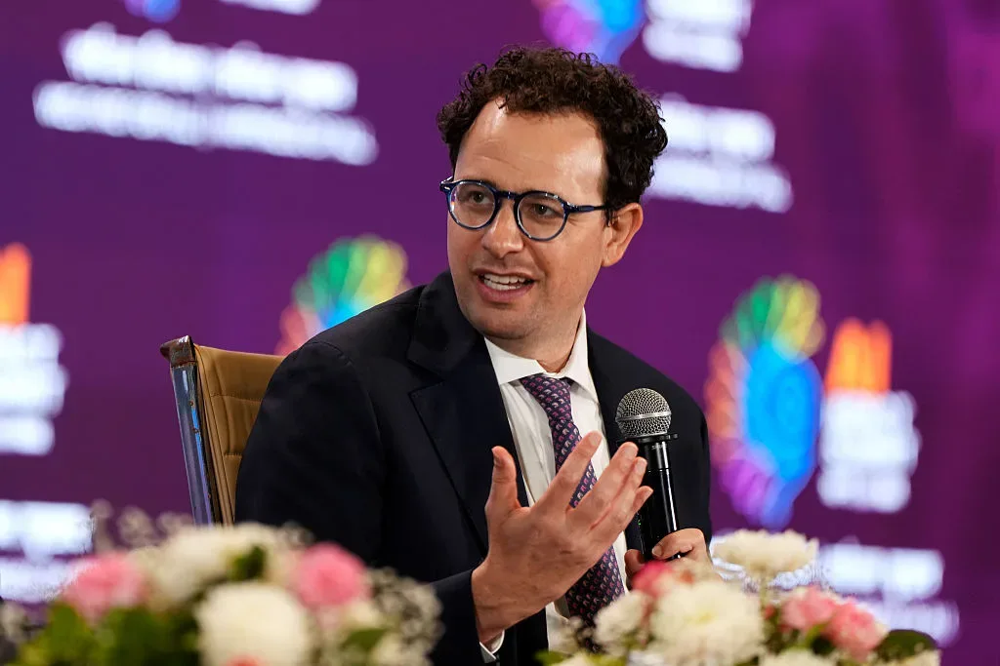
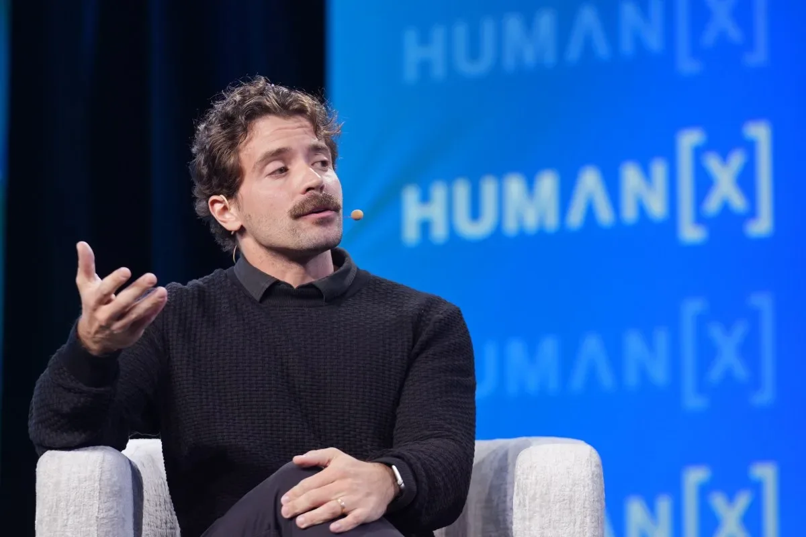
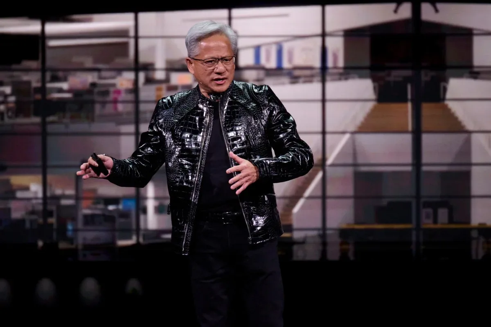
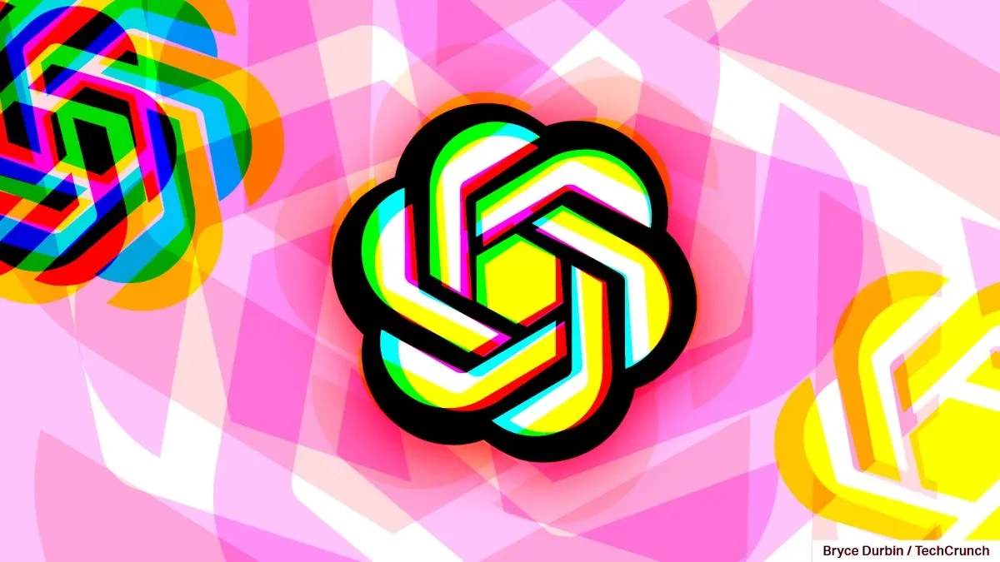

ИнвестицииСтартапы
Десять крупнейших раундов недели: Ramp привлёк $750 млн, три компании — по $500 млн
Ramp — $750 млн, Supabase — $500 млн, Helion — $465 млн: разбираем крупнейшие раунды недели
Crunchbase News
5 июн. 2026 г.Крупные раунды финансирования, M&A-сделки и движение венчурного капитала в AI-индустрии — куда течут деньги.
60 материалов
Ramp — $750 млн, Supabase — $500 млн, Helion — $465 млн: разбираем крупнейшие раунды недели

Платежные ИИ-стартапы для истцов привлекли $682 млн, но оборона — следующий большой рынок.

Три стартапа привлекли $268 млн: металлообработка, метаболическое здоровье и групповые туры.

Anthropic оценили в $965 млрд и подали заявку на IPO — раньше OpenAI. Что стоит за этим ростом?

Как основательница Clyx собрала $14 млн, выступая на ужинах вместо рассылки питч-деков

Бостон бьёт четырёхлетний рекорд по инвестициям — но ИИ-бум проходит мимо него

Топ-венчурные капиталисты — о групповом мышлении, коррекции и IPO SpaceX.

Anthropic привлек $65 млрд при оценке $965 млрд, обойдя OpenAI на $125 млрд

Венчурные инвесторы всё активнее вкладываются в стартапы, строящие ИИ-решения для оборонной и энергетической отраслей.

Стартап без ИИ привлёк $20 млн в разгар «ИИ-безумия»

Берлинский ИИ-стартап Peec удвоил выручку за полгода и вышел на $10 млн — на фоне сдвига рынка к росту вместо оценок.

Stanford, Harvard и MIT забирают треть венчурных раундов — данные Crunchbase за 2026 год

Сэм Альтман раздаёт токены OpenAI на $2 млн каждому стартапу YC — в обмен на долю в компании

Китайские робостартапы побили рекорд финансирования: $5,6 млрд за пять месяцев и очередь на IPO

Status ИИ привлёк $17 млн на платформу, где ИИ позволяет жить внутри любимых историй.

Шесть компаний забрали $90 млрд из венчурного рынка США. Что осталось остальным 6000?

Nectar Social с $30 млн Series A: как ИИ-агенты меняют маркетинг в соцсетях
В 2019 году Cerebras сжигала $8 млн в месяц, но выжила и вышла на IPO с оценкой $60 млрд

Брокман — $30 млрд, Суцкевер — $7 млрд: суд вскрыл доли сооснователей OpenAI

Sequoia собрала 150 лидеров ИИ и объяснила, где стартапам искать точку роста в 2026 году

Страховой стартап Corgi за 4 месяца вырос до $1,3 млрд — что он страхует и кто за ним стоит

Robinhood запустил венчурный фонд с OpenAI и Stripe внутри — без аккредитации и без 20% carry
a16z собрал $2,2 млрд для крипто — пока рынок падает, а конкуренты уходят в ИИ
Билл Гёрли и Джек Альтман вложили в стартап, который ищет госконтракты вместо вас

Sequoia удвоила ставку на ИИ: новый фонд в $7 млрд и портфель от OpenAI до роботов

Anthropic стоит $800 млрд? Инвесторы готовы платить, но компания не торопится брать деньги

ARR Vercel утроился за два года. Теперь 30% приложений на платформе пишут ИИ-агенты

Nvidia вложилась в стартап, который делает открытые чипы — альтернативу x86 и ARM для ИИ-дата-центров
Семейные офисы идут в ИИ напрямую — без венчурных фондов и с местом в совете директоров

Бывшие инженеры и исследователи OpenAI собрали $20 млн и объяснили, в какие ИИ-стартапы не стоит вкладывать